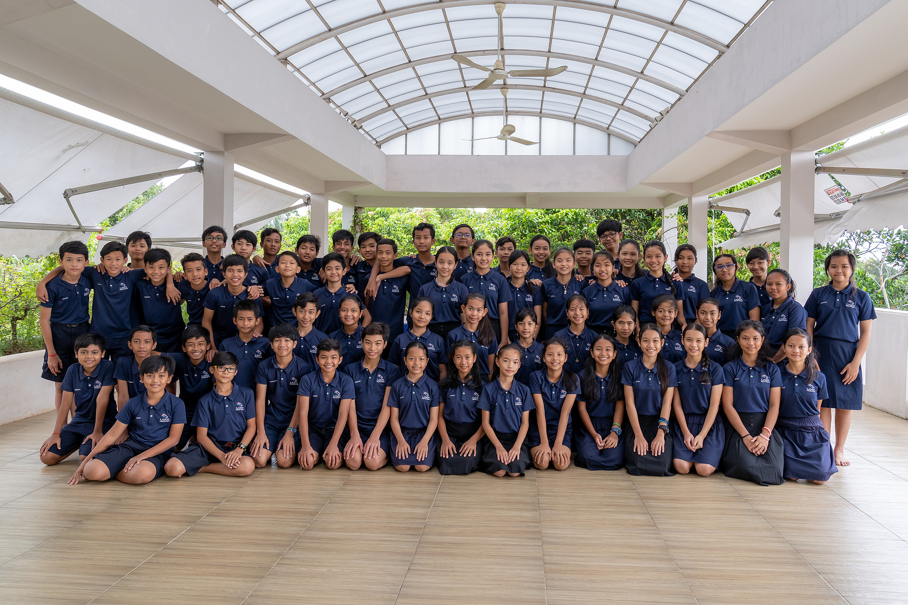
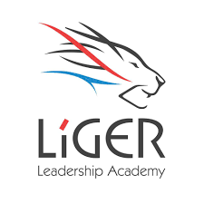

Ello! I'm Leza. Welcome to my blog. It's me Leza. I'm fourteen years old girl. I was born on June 9 2005 in Koh Kong Province, Cambodia. I am a person who really passionate about Math and STEM. In the future I want to persue an engineer degree. I'm also a girl who really to play sports such as Football, Volleyball and Frisbee. One of my favorite is sports is Frisbee. Frisbee is one of the spiritual sports where we play with the heart from the team. Frisbee match does not require referee which is great. Whenever we have problems we always talk as team. That's what I really love about it. On my free time I love to listen to music, playing frisbee and hangout with my friends.
When I was 11, I got selected to came to Liger Leadership Academy. This is my fourth year at Liger. After this three years my life has changed so much. School is no longer a school. It's my second home. It's not just about learning. Beyond that, I have a lot as being a person. It's a place that full of love, care and understanding people. Teacher are no longer my teachers, they are my parents. Friends are no longer my friend but they are my siblings. I could see and smell all of these that coming from life. I would love to take this opportunity just to admired Liger that how much I've learned. I learned what a life look like. I've learned what is forgiveness. I've learned what is siblings means. Thank you for this great opportunity!
 